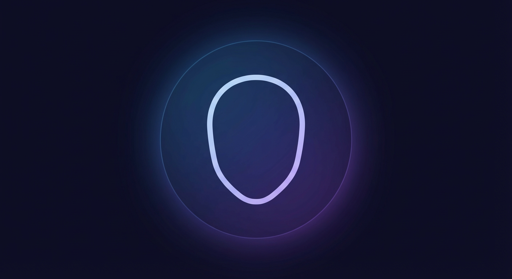
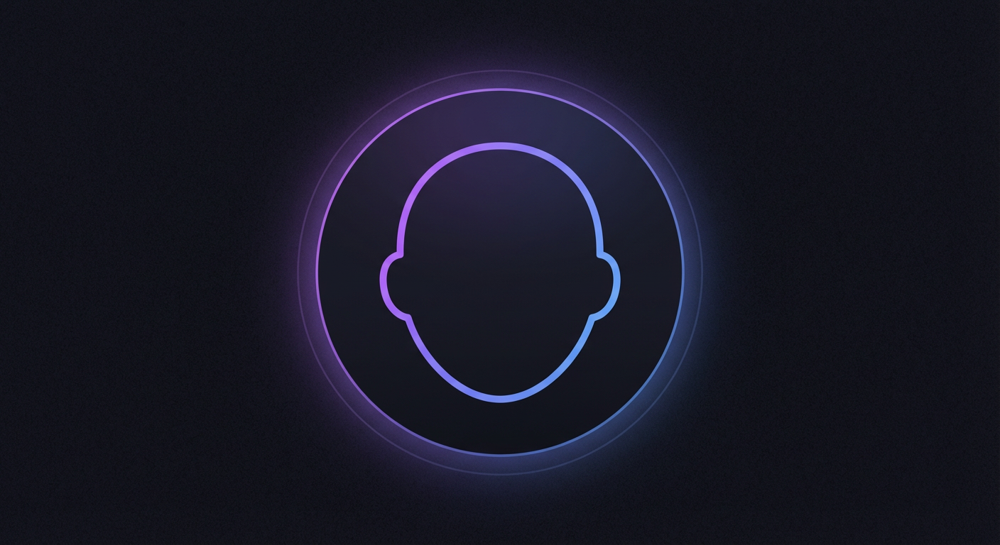
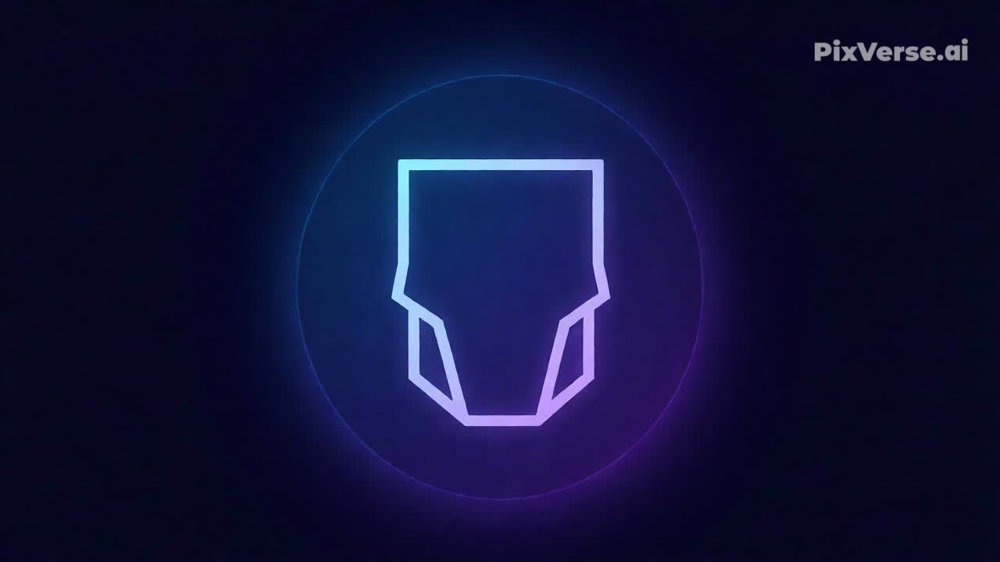
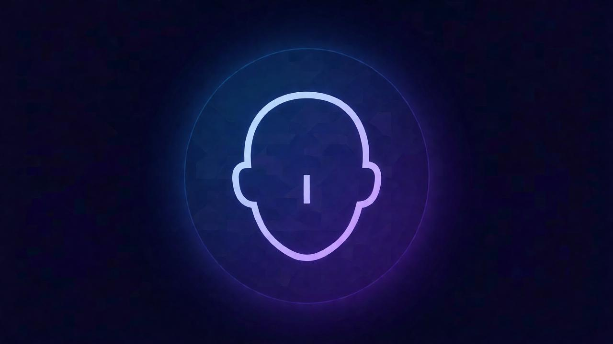
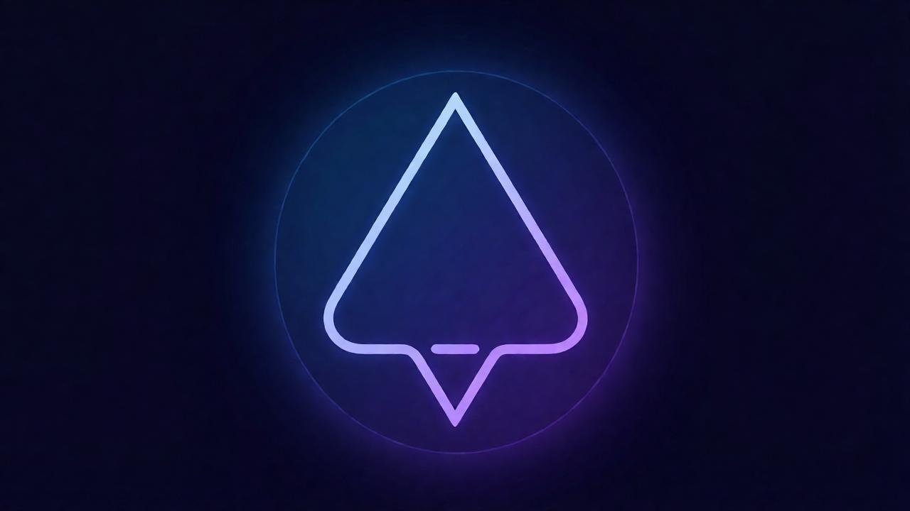
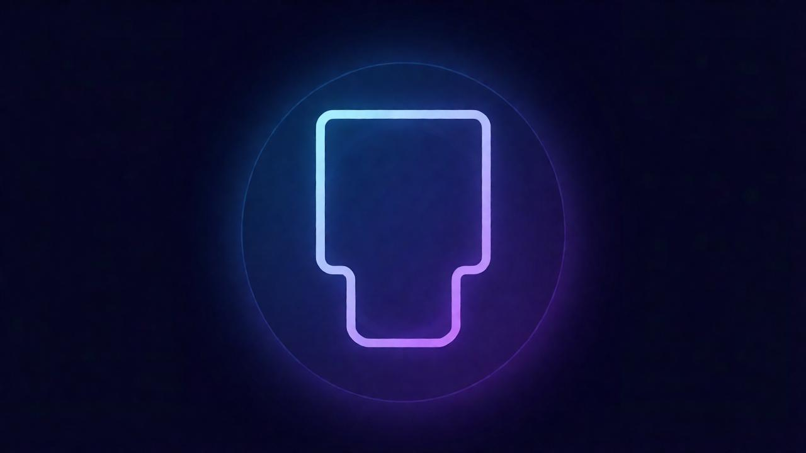
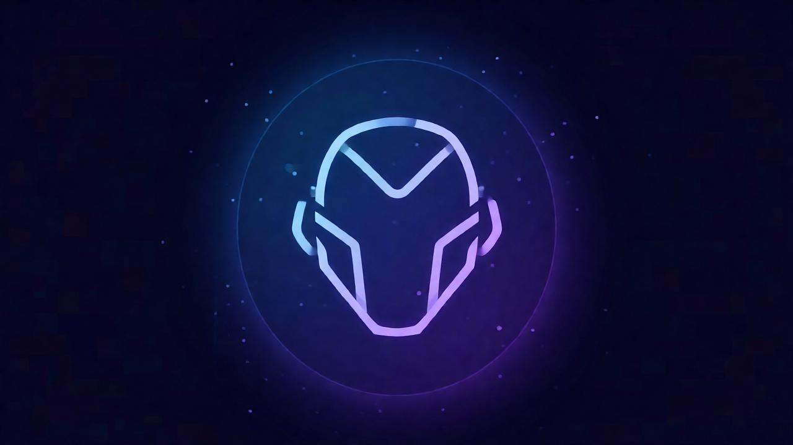

Овальное лицо
Считается универсальной формой лица. Подходит большинство стрижек — от коротких до длинных слоев.

Круглое лицо
Лучше выбирать прически, визуально вытягивающие лицо: каскад, объем сверху, асимметрия.

Квадратное лицо
Подходят мягкие линии и объем. Хорошо смотрятся волны, градуированные стрижки.

Сердцевидное лицо
Лучше балансировать широкий лоб и узкий подбородок — челка, объем у нижней части лица.

Треугольное лицо
Подойдут прически с объемом сверху и средней длиной волос.

Прямоугольное лицо
Лучше выбирать прически, добавляющие ширину: волны, челка, средняя длина.

Алмазное лицо
Подойдут стрижки с объемом у лба и подбородка. Хорошо работают слои.

Удлиненное лицо
Стоит добавлять объем по бокам. Хорошо подходят челки и средняя длина волос.